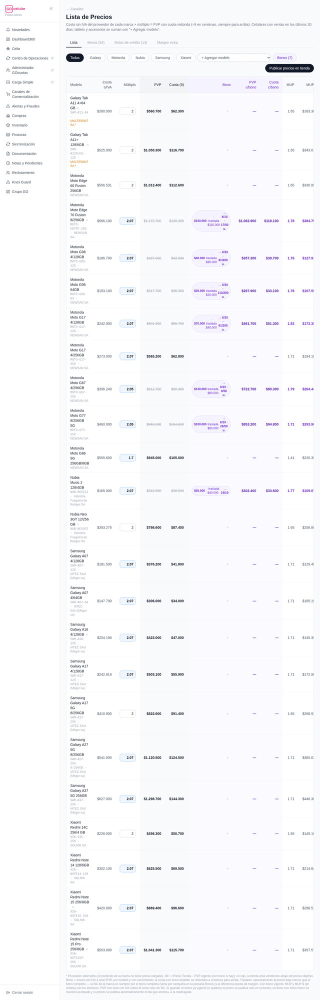
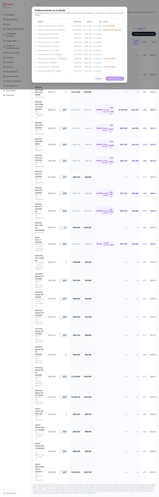
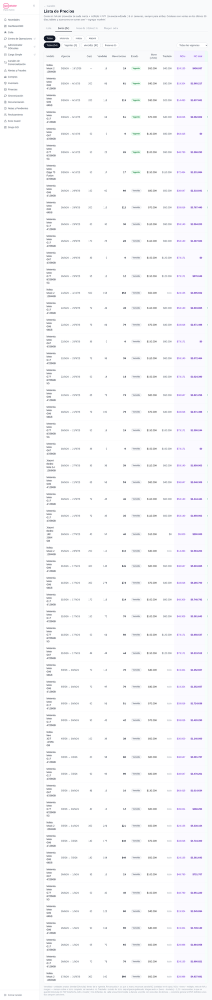
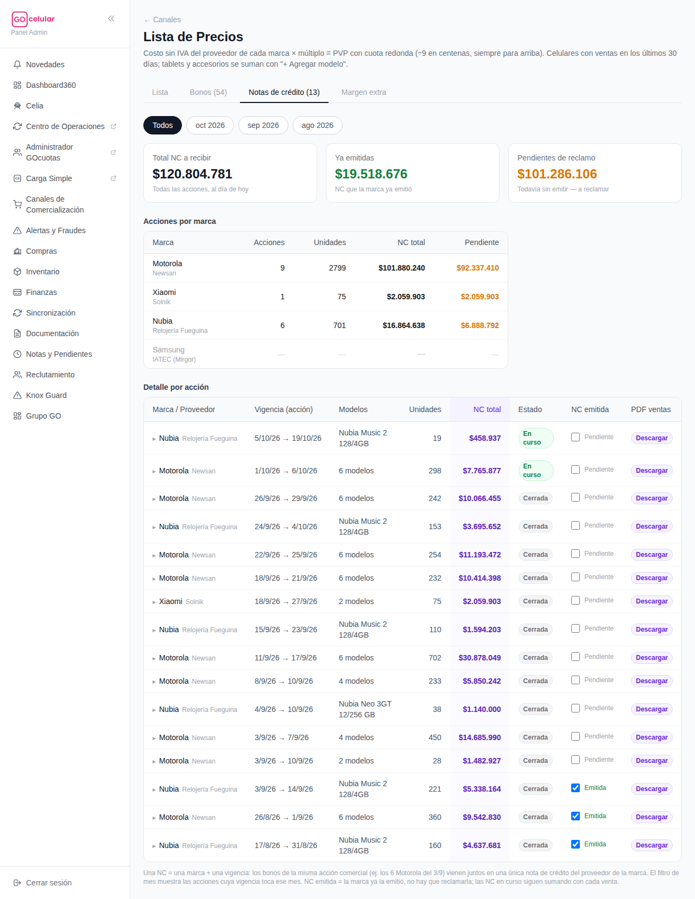
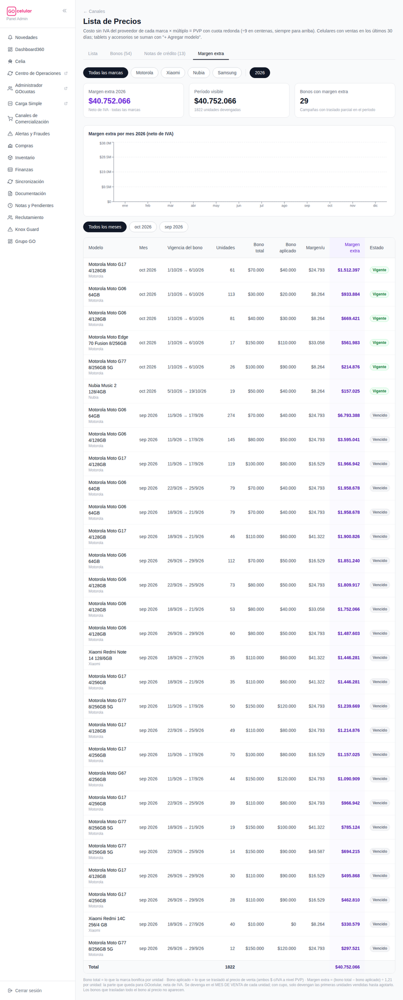

<title>Manual — Lista de Precios GOcelular</title>
<style>
  :root {
    --bg: #fcfcfa;
    --surface: #ffffff;
    --ink: #221e28;
    --muted: #6d6678;
    --line: #e9e4ee;
    --accent: #c21a5f;
    --accent-soft: #fdeef4;
    --bono: #6d28d9;
    --bono-soft: #f3eefe;
    --ok: #047857;
    --ok-soft: #ecfdf3;
    --warn: #b45309;
    --warn-soft: #fff7e8;
    --danger: #be123c;
    --danger-soft: #fef1f3;
    --chip: #f4f1f7;
  }
  @media (prefers-color-scheme: dark) {
    :root:not([data-theme="light"]) {
      --bg: #17141b; --surface: #201c26; --ink: #efeaf3; --muted: #a79fb3;
      --line: #352f3d; --accent: #f06ba3; --accent-soft: #3a1f2d;
      --bono: #b49afc; --bono-soft: #2c2440; --ok: #4ade80; --ok-soft: #16301f;
      --warn: #fbbf24; --warn-soft: #362a12; --danger: #fb7185; --danger-soft: #3b1c24;
      --chip: #2a2531;
    }
  }
  :root[data-theme="dark"] {
    --bg: #17141b; --surface: #201c26; --ink: #efeaf3; --muted: #a79fb3;
    --line: #352f3d; --accent: #f06ba3; --accent-soft: #3a1f2d;
    --bono: #b49afc; --bono-soft: #2c2440; --ok: #4ade80; --ok-soft: #16301f;
    --warn: #fbbf24; --warn-soft: #362a12; --danger: #fb7185; --danger-soft: #3b1c24;
    --chip: #2a2531;
  }
  * { box-sizing: border-box; }
  body {
    background: var(--bg); color: var(--ink);
    font: 16px/1.65 system-ui, -apple-system, "Segoe UI", Roboto, sans-serif;
    margin: 0; padding: 0 20px 80px;
  }
  main { max-width: 880px; margin: 0 auto; }
  h1, h2, h3 { line-height: 1.25; text-wrap: balance; }
  h1 { font-size: 2rem; margin: 40px 0 6px; }
  h2 { font-size: 1.45rem; margin: 56px 0 4px; padding-top: 16px; border-top: 3px solid var(--accent); }
  h3 { font-size: 1.05rem; margin: 26px 0 8px; }
  p { margin: 10px 0; }
  .sub { color: var(--muted); margin: 0 0 8px; }
  .meta { font-size: .8rem; color: var(--muted); }
  .eyebrow { text-transform: uppercase; letter-spacing: .09em; font-size: .72rem; font-weight: 700; color: var(--accent); }

  nav.toc { display: flex; flex-wrap: wrap; gap: 8px; margin: 22px 0 10px; position: sticky; top: 0; background: var(--bg); padding: 12px 0; z-index: 5; border-bottom: 1px solid var(--line); }
  nav.toc a { font-size: .82rem; font-weight: 600; color: var(--ink); text-decoration: none; background: var(--chip); border: 1px solid var(--line); border-radius: 999px; padding: 5px 12px; }
  nav.toc a:hover, nav.toc a:focus-visible { border-color: var(--accent); color: var(--accent); outline: none; }

  table { border-collapse: collapse; width: 100%; font-size: .9rem; }
  .tablewrap { overflow-x: auto; border: 1px solid var(--line); border-radius: 12px; background: var(--surface); margin: 14px 0; }
  th { text-align: left; font-size: .72rem; text-transform: uppercase; letter-spacing: .05em; color: var(--muted); padding: 10px 14px; border-bottom: 1px solid var(--line); }
  td { padding: 9px 14px; border-bottom: 1px solid var(--line); vertical-align: top; }
  tr:last-child td { border-bottom: none; }
  td.num, .num { font-variant-numeric: tabular-nums; }

  ol.pasos { counter-reset: paso; list-style: none; padding: 0; margin: 14px 0; display: grid; gap: 10px; }
  ol.pasos li { counter-increment: paso; background: var(--surface); border: 1px solid var(--line); border-radius: 12px; padding: 12px 16px 12px 54px; position: relative; }
  ol.pasos li::before {
    content: counter(paso); position: absolute; left: 14px; top: 12px;
    width: 28px; height: 28px; border-radius: 999px; background: var(--accent); color: #fff;
    display: grid; place-items: center; font-weight: 800; font-size: .9rem;
  }
  .callout { border-radius: 12px; padding: 12px 16px; margin: 14px 0; border: 1px solid; font-size: .93rem; }
  .callout.oro { background: var(--warn-soft); border-color: var(--warn); }
  .callout.tip { background: var(--ok-soft); border-color: var(--ok); }
  .callout.ojo { background: var(--danger-soft); border-color: var(--danger); }
  .callout.bono { background: var(--bono-soft); border-color: var(--bono); }
  .callout b:first-child { display: block; margin-bottom: 2px; }

  figure { margin: 18px 0; }
  figure .frame { max-height: 540px; overflow-y: auto; border: 1px solid var(--line); border-radius: 12px; background: var(--surface); }
  figure img { display: block; width: 100%; height: auto; }
  figcaption { font-size: .8rem; color: var(--muted); margin-top: 6px; }

  code, .formula { font-family: ui-monospace, "Cascadia Code", Menlo, monospace; font-size: .88em; background: var(--chip); border-radius: 6px; padding: 1px 6px; }
  .formula { display: block; padding: 14px 18px; font-size: 1rem; margin: 14px 0; border: 1px solid var(--line); overflow-x: auto; white-space: nowrap; }
  .pill { display: inline-block; font-size: .76rem; font-weight: 700; border-radius: 999px; padding: 2px 10px; }
  .pill.vig { background: var(--ok-soft); color: var(--ok); }
  .pill.ven { background: var(--chip); color: var(--muted); }
  .pill.rojo { background: var(--danger-soft); color: var(--danger); }
  .pill.violeta { background: var(--bono-soft); color: var(--bono); }
  .pill.ambar { background: var(--warn-soft); color: var(--warn); }
</style>

<main>
  <p class="eyebrow">GOcelular360 · Manual operativo</p>
  <h1>💰 Lista de Precios — cómo fijar, publicar y cobrar</h1>
  <p class="sub">Todo lo que hace falta para operar la página <b>Canales → Lista de Precios</b>: fijar precios, publicarlos en la tienda, cargar bonos de las marcas y reclamar las notas de crédito. Con capturas reales de la pantalla.</p>
  <p class="meta">Actualizado el 6/10/2026 · Las capturas son de producción — los números que veas al entrar van a ser los del día.</p>

  <nav class="toc">
    <a href="#mapa">🧭 El mapa</a>
    <a href="#precio">🧮 Fijar un precio</a>
    <a href="#publicar">🛒 Publicar en tienda</a>
    <a href="#bonos">🎁 Bonos</a>
    <a href="#nc">🧾 Notas de crédito</a>
    <a href="#margen">💜 Margen extra</a>
    <a href="#oro">⭐ Reglas de oro</a>
  </nav>

  <h2 id="mapa">🧭 El mapa en 30 segundos</h2>
  <p>La página tiene <b>4 pestañas</b>. Cada una responde una pregunta distinta:</p>
  <div class="tablewrap"><table>
    <tr><th>Pestaña</th><th>Responde…</th><th>La usás cuando…</th></tr>
    <tr><td>📋 <b>Lista</b></td><td>¿A qué precio vendemos cada modelo?</td><td>Fijás o ajustás precios, cargás bonos, publicás a la tienda.</td></tr>
    <tr><td>🎁 <b>Bonos</b></td><td>¿Qué campañas de las marcas hubo y cuánto generan?</td><td>Querés ver el historial: vigencias, cupos, unidades vendidas y NC esperada.</td></tr>
    <tr><td>🧾 <b>Notas de crédito</b></td><td>¿Cuánta plata nos deben las marcas y cuál falta reclamar?</td><td>Cerró una campaña y hay que reclamar la NC, o llegó una NC y hay que marcarla.</td></tr>
    <tr><td>💜 <b>Margen extra</b></td><td>¿Cuánto margen dejó la parte del bono que no trasladamos al precio?</td><td>Querés ver el resultado extra que generaron las campañas, mes a mes.</td></tr>
  </table></div>

  <h2 id="precio">🧮 Cómo se determina un precio</h2>
  <p>El precio <b>no se tipea a mano</b>: sale de una fórmula. Lo único que elegís es el <b>múltiplo</b>.</p>
  <span class="formula">PVP = costo sin IVA del proveedor × múltiplo &nbsp;→&nbsp; Cuota = PVP ÷ 9, redondeada a la centena <b>siempre para arriba</b></span>
  <p>Por eso todos los PVP terminan siendo múltiplos de $900: la cuota queda redonda, que es lo que ve el cliente.</p>
  <ul>
    <li>💵 <b>Costo sin IVA</b>: lo trae solo desde Compras. Usa el <b>proveedor preferido de cada marca</b> (Samsung → IATEC/Mirgor, Motorola → Newsan, Xiaomi → Solnik, Nubia → R. Fueguina), aunque haya otro más barato. Si ves un <span class="pill ambar">*</span> ámbar junto al proveedor, es un proveedor alternativo — dato, no problema.</li>
    <li>✖️ <b>Múltiplo</b>: el markup. Arranca en 2 y se edita por modelo, directo en la tabla.</li>
    <li>📈 <b>MUP y MUP$</b>: el margen que deja ese múltiplo (sin IVA). Con bono vigente se pintan <span class="pill violeta">violeta</span>: es el margen efectivo contando la NC de la marca.</li>
    <li>🏪 <b>Precio tienda y Dif</b>: lo que la tienda está cobrando ahora mismo vs. el objetivo. <b>Dif en rojo = la tienda está vendiendo más barato que tu precio objetivo</b> → hay que publicar.</li>
  </ul>
  <h3>Paso a paso: ajustar el precio de un modelo</h3>
  <ol class="pasos">
    <li>Entrá a <b>Canales → Lista de Precios</b> (pestaña <b>Lista</b>). Filtrá por marca con las píldoras si querés.</li>
    <li>Tocá el casillero de <b>Múltiplo</b> del modelo y escribí el nuevo valor (ej. 2.07). Enter.</li>
    <li>Mirá cómo quedan <b>PVP</b>, <b>Cuota (9)</b> y <b>MUP</b>. Si el margen te cierra, listo — el precio objetivo ya quedó guardado.</li>
    <li>⚠️ Guardar acá <b>no cambia la tienda todavía</b>: falta publicar (sección siguiente).</li>
  </ol>
  <p>📱 Los celulares entran solos a la lista (todos los que vendieron en los últimos 30 días). Tablets y accesorios se suman a mano con <b>“+ Agregar modelo”</b>, arriba a la derecha.</p>
  <figure>
    <div class="frame"></div>
    <figcaption>📸 Pestaña <b>Lista</b> — captura real. Los chips violetas son bonos vigentes con su traslado. Deslizá dentro del marco para ver toda la tabla.</figcaption>
  </figure>

  <h2 id="publicar">🛒 Cómo se publican los precios en la tienda</h2>
  <p>El botón negro <b>“Publicar precios en tienda”</b> (arriba a la derecha de la Lista) abre una ventana que compara <b>lo que la tienda cobra hoy</b> contra <b>tu precio objetivo</b>, validado contra GOcelular. Nada se publica hasta que confirmás.</p>
  <ol class="pasos">
    <li>Tocá <b>Publicar precios en tienda</b> y esperá el “Consultando tienda…”.</li>
    <li>Revisá la ventana: cada fila muestra <b>Tienda hoy → Nuevo</b> y el % de cambio. Las filas “sin cambio” no hacen nada.</li>
    <li>Leé los avisos de la derecha: <span class="pill ambar">sin stock ofertable</span> (no hay unidades para vender) y <span class="pill rojo">debajo del costo registrado</span> (¡ese precio pierde plata — revisalo antes de publicar!).</li>
    <li>Destildá lo que <b>no</b> quieras tocar. Podés publicar todo, algunos, o ninguno.</li>
    <li>Tocá <b>“Publicar N cambios”</b>. Si una línea falla, no se aplica ninguna — no queda la tienda a medias.</li>
  </ol>
  <div class="callout tip"><b>💡 Los bonos se publican solos</b>Cuando guardás un bono (o lo quitás), el sistema publica el precio con bono en la tienda al instante — no hace falta pasar por este botón. Si la tienda no responde en ese momento, reintenta solo cada 10 minutos. Y un bono cargado con fecha futura arranca solo el día que empieza, a la madrugada.</div>
  <figure>
    <div class="frame"></div>
    <figcaption>📸 La ventana de publicación — se ve el diff contra la tienda y los avisos por fila antes de confirmar.</figcaption>
  </figure>

  <h2 id="bonos">🎁 Bonos: la plata que pone la marca</h2>
  <p>Un <b>bono</b> es un monto fijo <b>con IVA</b> por unidad vendida que la marca bonifica durante una campaña (“sell-out”). Funciona así: <b>el precio de la tienda baja</b> para vender más, y después <b>la marca te devuelve el bono por nota de crédito</b>.</p>
  <ul>
    <li>🗓️ Todo bono tiene <b>vigencia</b> (desde/hasta) y puede tener <b>cupo</b> (tope de unidades que la marca reconoce).</li>
    <li>➗ La NC que te devuelve la marca es <b>NC por unidad = bono ÷ múltiplo</b> (la marca la manda neta de IVA y markup).</li>
    <li>🔀 <b>Traslado</b>: podés trasladar al precio el bono completo o solo una parte. Lo que no trasladás queda como <b>margen extra</b> para GO (se ve en la pestaña 💜). Ejemplo real: bono $150.000, traslado $110.000 → el precio baja $110.000 y quedan ~$33.000/u de margen sin IVA.</li>
  </ul>
  <h3>Paso a paso: cargar un bono</h3>
  <ol class="pasos">
    <li>En la pestaña <b>Lista</b>, buscá el modelo y tocá el <b>“+”</b> de la columna <b>Bono</b>.</li>
    <li>Cargá: <b>monto</b> del bono (con IVA, como lo comunica la marca), <b>vigencia</b> desde/hasta, <b>cupo</b> si lo hay, y <b>traslado</b> (vacío = se traslada todo).</li>
    <li>Guardá. El sistema recalcula el <b>PVP c/bono</b> (con la cuota re-redondeada) y <b>publica solo el precio en la tienda</b>. Si el bono arranca en el futuro, se publica solo ese día a la madrugada.</li>
    <li>✅ Automáticamente se crean <b>dos recordatorios</b> en Notas y Pendientes: uno el día del <b>vencimiento</b> (reajustar el precio) y otro <b>40 días después</b> (reclamar la NC a la marca).</li>
  </ol>
  <div class="callout oro"><b>⭐ Regla de oro del traslado</b>Al precio se le descuenta el <b>traslado</b>, pero la NC se calcula <b>siempre por el bono completo</b>. Nunca descuentes del precio “solo la NC”: el mecanismo está armado para que el margen (MUP) se mantenga exacto — la parte del bono que la marca pone para bajar el precio de calle no es margen nuestro.</div>
  <p>La pestaña <b>Bonos</b> es el historial: filtrás por marca y estado (<span class="pill vig">Vigente</span> / <span class="pill ven">Vencido</span> / Futuro) y ves por campaña el cupo, las unidades vendidas, las <b>reconocidas</b> (las que entran en el cupo) y la NC esperada.</p>
  <figure>
    <div class="frame"></div>
    <figcaption>📸 Pestaña <b>Bonos</b> — cada fila es una campaña de una marca sobre un modelo.</figcaption>
  </figure>

  <h2 id="nc">🧾 Notas de crédito: cuándo y cómo reclamar</h2>
  <p>Esta pestaña junta los bonos en <b>acciones comerciales</b>: una NC = <b>una marca + una vigencia</b> (si Motorola bonificó 6 modelos del 3/9 al 7/9, eso es UNA nota de crédito). Arriba tenés las tres tarjetas clave:</p>
  <ul>
    <li>💰 <b>Total NC a recibir</b> — todo lo que las marcas nos deben por bonos, al día de hoy.</li>
    <li>✅ <b>Ya emitidas</b> — lo que las marcas ya emitieron (no hay nada que hacer).</li>
    <li>🟠 <b>Pendientes de reclamo</b> — <b>esta es la tarjeta que hay que vigilar</b>: plata que todavía no se reclamó.</li>
  </ul>
  <h3>Paso a paso: reclamar una NC</h3>
  <ol class="pasos">
    <li>Mirá el <b>Detalle por acción</b>. Las acciones <span class="pill vig">En curso</span> siguen sumando ventas — todavía no se reclaman. Las <span class="pill ven">Cerrada</span> ya están listas para reclamar.</li>
    <li>En la fila de la acción cerrada, tocá <b>“Descargar”</b>: es el <b>PDF con el detalle de ventas</b> (modelos, unidades, montos) que respalda el reclamo.</li>
    <li>Mandale el PDF al contacto de la marca / proveedor (Newsan para Motorola, Solnik para Xiaomi, R. Fueguina para Nubia, IATEC-Mirgor para Samsung) pidiendo la emisión de la NC.</li>
    <li>Cuando la marca emite la NC, <b>tildá el checkbox “Emitida”</b> en esa fila. La plata pasa de “Pendientes de reclamo” a “Ya emitidas”.</li>
  </ol>
  <div class="callout tip"><b>⏰ ¿Cuándo reclamar?</b>No hay que acordarse de memoria: al cargar cada bono, el sistema ya creó un recordatorio en <b>Notas y Pendientes</b> para <b>40 días después del vencimiento</b> de la campaña (tiempo típico en que la marca procesa). Si la tarjeta naranja crece y hay acciones Cerradas viejas sin tildar, es señal de reclamos atrasados.</div>
  <figure>
    <div class="frame"></div>
    <figcaption>📸 Pestaña <b>Notas de crédito</b> — tarjetas de control arriba, acciones por marca y el detalle con el checkbox “Emitida” y el PDF de respaldo.</figcaption>
  </figure>

  <h2 id="margen">💜 Margen extra: lo que queda en casa</h2>
  <p>Cuando un bono se traslada <b>parcialmente</b>, la diferencia (bono − traslado, neta de IVA) es margen adicional para GO. Esta pestaña lo muestra <b>devengado por mes de venta</b> de cada unidad: tarjetas con el total del año, gráfico por mes (podés tocar una barra para filtrar) y el detalle campaña por campaña con el margen por unidad.</p>
  <p>👀 Para qué sirve: medir cuánto resultado extra generaron las campañas y comparar marcas. Los bonos que trasladan todo no aparecen acá (no dejan margen extra — y está bien que así sea).</p>
  <figure>
    <div class="frame"></div>
    <figcaption>📸 Pestaña <b>Margen extra</b> — el devengo mensual del margen que dejaron los traslados parciales.</figcaption>
  </figure>

  <h2 id="oro">⭐ Reglas de oro (resumen para la heladera)</h2>
  <div class="tablewrap"><table>
    <tr><th></th><th>Regla</th></tr>
    <tr><td>1️⃣</td><td>El precio sale de <b>costo × múltiplo</b>; vos solo tocás el múltiplo. La cuota siempre redondea <b>para arriba</b> a la centena.</td></tr>
    <tr><td>2️⃣</td><td>Cambiar el múltiplo <b>no cambia la tienda</b>: siempre terminá con <b>Publicar precios en tienda</b> y revisá los avisos antes de confirmar.</td></tr>
    <tr><td>3️⃣</td><td><b>Dif en rojo</b> en la Lista = la tienda vende abajo del objetivo → publicar. <span class="pill rojo">debajo del costo registrado</span> en el modal = frenar y revisar.</td></tr>
    <tr><td>4️⃣</td><td>Los <b>bonos se publican solos</b> (al guardar, al arrancar su vigencia y al vencer). No toques el precio a mano por un bono.</td></tr>
    <tr><td>5️⃣</td><td>Al precio va el <b>traslado</b>; la <b>NC es siempre por el bono completo</b>. Jamás descontar “solo la NC” del precio.</td></tr>
    <tr><td>6️⃣</td><td>Acción <span class="pill ven">Cerrada</span> → <b>descargar PDF → reclamar → tildar Emitida</b>. La tarjeta naranja de “Pendientes de reclamo” tiene que tender a cero.</td></tr>
    <tr><td>7️⃣</td><td>Los recordatorios de vencimiento y reclamo se crean solos en <b>Notas y Pendientes</b> — revisalos cada mañana.</td></tr>
    <tr><td>8️⃣</td><td>Todos los montos de margen se muestran <b>sin IVA</b>; el bono se carga <b>con IVA</b>, tal como lo comunica la marca.</td></tr>
  </table></div>

  <p class="meta" style="margin-top:40px">Manual generado desde el código y la pantalla real de GOcelular360 · dudas de fondo: Emiliano · dudas técnicas: este documento se regenera a pedido.</p>
</main>
